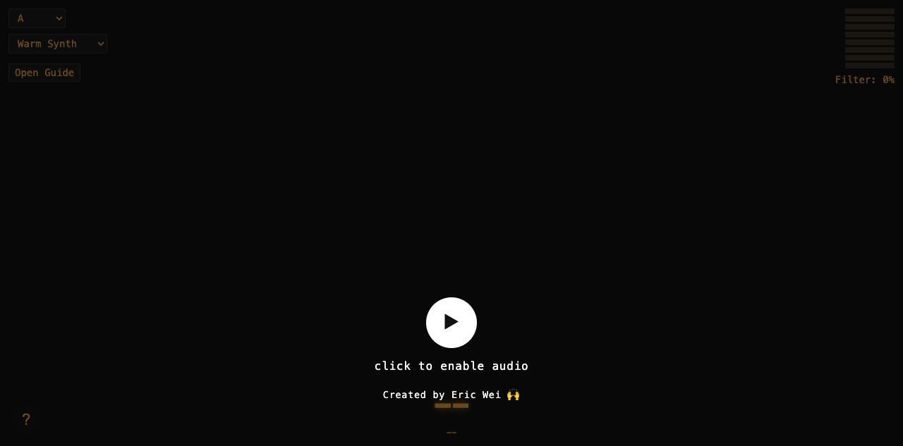

Instagram｜Gesture Synth：用手勢即時演奏的瀏覽器合成器

一句話摘要
Gesture Synth 是一個可在瀏覽器中執行的互動式合成器：使用者以雙手姿態控制和弦、旋律、八度、濾波與音量，把攝影機手勢辨識變成即時演奏介面。
為什麼保存
這則 Instagram Reel 留言提供了可直接試玩的網址，適合放入 AI 學習雷達作為「多模態介面 × 創意編程 × 音樂科技」案例。它不是單純的 AI 內容生成工具，而是把視覺辨識、手勢語彙與聲音合成整合成一個低門檻的網頁樂器，對課程示範、互動展演與 AI/HCI 教學都很有參考價值。
實測重點
- 工具名稱：Gesture Synth
- 作者：Eric Wei（介面內標示 Created by Eric Wei）
- 入口：https://gesture-synth-weld.vercel.app/
- 來源線索：Instagram Reel 留言提到「The url: https://gesture-synth-weld.vercel.app/.. try it it soo good」
- 技術線索：前端程式載入 MediaPipe Tasks Vision WASM，並出現 Tone / Tone.js 相關音訊合成邏輯。
- 介面：黑色背景、復古琥珀色控制項、Key 下拉選單、音色下拉選單、Filter 百分比與使用說明。
操作語彙
### 左手
- 傾斜向內：大調
- 傾斜向外：小調
- 手指數量控制級數：1→I、2→II、3→III、4→IV、5→V
- 食指＋小指：VI
- 食指＋小指＋拇指：VII
### 右手
- 手指數量控制和弦型態：
- 1：根音位置
- 2：第一轉位
- 3：大／小七和弦
- 4：屬七／減七和弦
- 拇指向內：較高八度
- 拇指向外：較低八度
- 傾斜向內：更多濾波
- 傾斜向外：較少濾波
- 手部高度：越高越大聲，越低越小聲
對欒帥的應用價值
- 可作為「AI 與多模態互動」課程中的即時示範：攝影機輸入如何轉成音樂輸出。
- 可延伸討論 MediaPipe、瀏覽器端機器學習、WebAudio / Tone.js 與創意編程。
- 可作為學生作品範例：不一定要做大型 AI 產品，小型互動原型也能很有記憶點。
- 適合連結到「人機協作不是只有文字聊天」的教學主題，展示身體動作、聲音與即時回饋的設計可能。
後續追蹤
- 觀察作者是否公開原始碼或完整教學。
- 可測試不同裝置與瀏覽器的鏡頭權限、延遲、手勢辨識穩定度。
- 若後續有 GitHub repo，可再補上技術拆解與教學工作流。
原始連結
https://www.instagram.com/reel/DblrXbLvmwz/?comment_id=17918297061421577